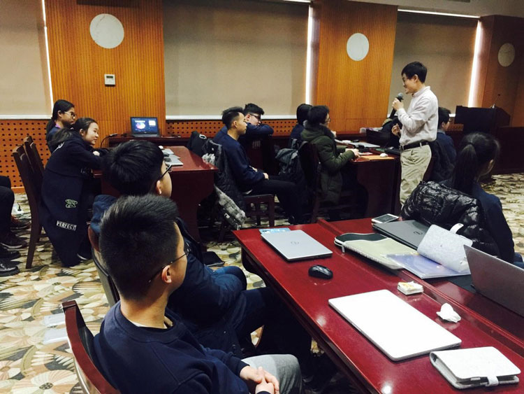

“未来学者”项目是文化寻力项目管理办公室联合清华大学中美关系研究中心共同推出的项目，招募中学生开展中美课题的研究，旨在提升学生跨文化研究能力和协作能力。课题由清华大学中美关系研究中心设计。行前，专家将对学生进行线上指导，在北京举办“中美研究工作坊”，进行集中培训，然后由来自清华大学等一流高校的研究生担任学术导师，带领学生在美国完成课题的资料搜集、调查分析和课题报告撰写。教授对课题报告进行评审，评审合格的将获得课题证书。
时间：2018.07.08-2018.07.24（华盛顿州） / 07.08- .07.31（北卡州）
• 清华大学中美关系研究中心专家精心设计课题，并对学生进行线上指导，在京举办“中美研究工作坊”，在国内开题并集中培训指导。
• 通过国内培训和指导，海外实践的形式，提升学生跨文化研究能力和协作能力。
• 提升学生学术背景，助力申请美国名校。

• 提升团队合作、与人沟通的能力；以及分析解决问题和实践调研的能力。


• 由导师综合评审课题，合格者可获得“清华大学中美关系研究中心课题证书”和“文化交流使者”双证书。


• 华盛顿州行程安排：

• 北卡州行程安排:


• 由导师综合评审课题，合格者可获得“清华大学中美关系研究中心课题证书”和“文化交流使者”双证书。
• 由导师综合评审课题，合格者可获得“清华大学中美关系研究中心课题证书”和“文化交流使者”双证书。


北卡罗来纳州是许多著名私立大学的所在地，比如杜克大学，维克森林大学等。夏洛特属亚热带季风性湿润气候，四季分明，气候温和湿润，年平均气温 12℃。市内树木葱郁，绿草如茵，享有“ 绿色城市 ”美称。艾尔德尔-斯泰茨维尔学区（ 简称I-SS ）位于北卡罗来纳州艾尔德尔郡，拥有超过20,000 名学生，是北卡罗来纳州最大的学区之一。知名“ 蓝带高中”诺曼湖中学坐落于此。作为北卡乃至全美的示范性学区，I-SS获得了马尔科姆·波多里奇国家质量奖。